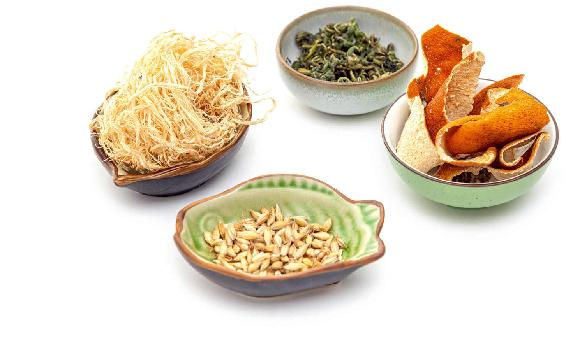
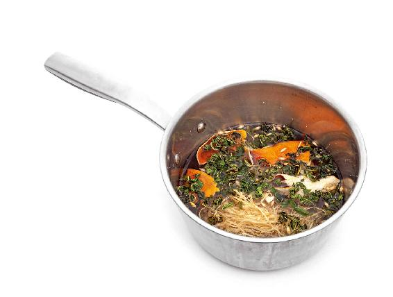
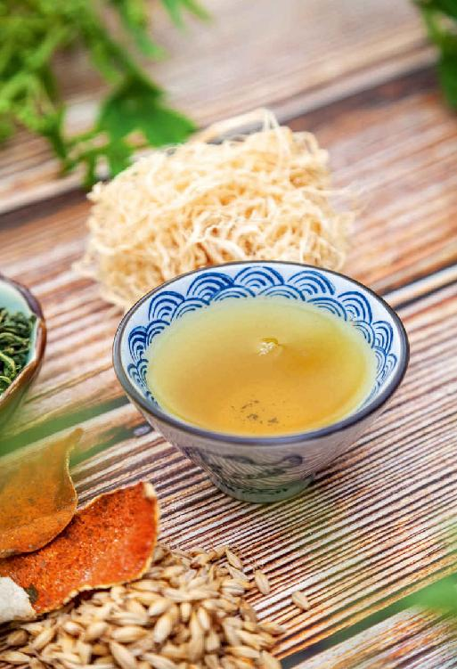

我们的身体从健康到亚健康，再到疾病、重大疾病，这个发展过程看起来漫长，其实只有七步。第一步，就是从健康迈进亚健康的门槛，而这关键性一步的通常表现，就是容易疲劳、困乏。
老话说：“春困秋乏夏打盹，睡不醒的冬三月。”乍一听，这春困秋乏好像是正常现象，其实是亚健康的信号。
一个身体健康的人，无论在春夏秋冬哪个季节，都是不太容易有这些困乏感受的。一旦出现，我们就要警惕了。
春困秋乏夏打盹，还有冬天的嗜睡，它们的原因都是不一样的，表现也不同。特别是体质不同的人，表现还有区别。您可以观察自己身体在不同季节困乏的表现，来分辨到底是哪里出了问题，哪些部位已经有亚健康的症状了。
“春困”和“秋乏”是有区别的。乏是疲倦的表现，而困是想睡觉。
春困、秋乏出现的时间不一样。春困一般出现在午后，吃完午饭以后，下午觉得特别的困。如果没有及时地调理，发展到夏天就成夏打盹了——夏天吃完午饭后，会控制不住地想睡觉。
我在讲课的时候，经常发现有些朋友上午听课特别认真，拿着笔记本一直在记。吃完午饭后半小时，他真的是要使劲用手撑开自己的眼皮，才能防止上下眼皮打架；还有的朋友本来是用手顶住自己的下巴，突然打盹，头一下垂下，但过一会儿又精神了。
以上这些都是困的表现。
秋乏一般是在早上不想起床，起来后觉得四肢无力，懒洋洋的。发展到冬天，就变成了嗜睡，早上总觉得睡不醒，不管睡到多晚，起床以后还是觉得没有睡够，四肢还酸软无力，不想动弹。
人为什么会困，特别是春困呢？因为春天气温由冷变暖，我们的体表温度也随之升高，血液都到了四肢。这时候，我们的内里——五脏六腑就比较缺血。
五脏六腑缺血，大脑也就缺血，大脑缺血就会缺氧，这时候人就会很困，头脑不清醒，注意力不集中。
春困，困的是什么呢？困的是我们的内脏和大脑。
秋乏是什么原因引起的呢？秋天的时候，天气由热变凉，人体的毛孔也收缩了，血液开始回流到内脏。这时候，内脏倒是不缺血了，但四肢容易缺血，人这时就会感觉到四肢无力。四肢酸软无力就是人体外在困乏、缺血的表现。
所以春困和秋乏，一个困的是里，一个乏的是外。而春困、秋乏这种现象越明显，就说明身体亚健康的情况越严重。
第一种春困，就是平时有点血虚的朋友，特别是贫血的朋友，大脑缺血的情况会变得很严重，他比普通人的春困更明显，这种困还带有昏昏沉沉的感觉。
在春天，如果您每到午后，感觉头脑昏沉，注意力不集中（如果是学生，觉得没法集中精力听讲），那就要多吃点补血的食物了。
第二种春困，表现在不仅人发困，吃完饭以后还觉得肚子胀胀的、不消化，总想躺下来休息一会儿才舒服。这就是消化系统——肝和脾的问题了。
春天是肝气旺的季节，肝气太旺就会影响到脾的功能。平时肝脏功能不太好、脾比较虚的朋友，消化系统的问题就会特别明显。遇到这种情况，您要多吃疏肝理气、健脾的食物来帮助自己消化。
第三种春困，还伴有胸闷、气短，吸气不能吸得很深入，有时候还有一点心悸的感觉。这种是心脏功能比较弱的表现，很多女孩子都会感到胸闷。
如果您午后春困，还伴随着胸闷，我建议您做做深呼吸，然后捋一捋胸骨。
做法：先深吸一口气，然后一边呼气，一边用两手顺着自己的胸骨往两胁下捋。
也就是用两只手在膻中穴这里合在一起，深吸一口气，然后一边呼气，一边两只手一左一右成八字形往下捋。
有条件的话，您也可以在午后躺着来做。一边深呼吸，一边往下捋，这样会更舒服。这样捋几次，您就会觉得胸闷的症状减轻了，呼吸也顺畅了，吸得也更深了。
记住，捋的动作不需要做太多，三次就足够了，只要胸闷的症状减轻就可以了。不要贪多，因为做多以后，会觉得气有点不足。
第四种春困，是精神上有点麻木、冷漠，提不起劲，总觉得干什么都没兴趣，就是俗话说的伤春悲秋。
这种朋友要特别注意甲状腺的功能，如果甲状腺功能开始减退的话，人就会有伤春悲秋的情绪。这个时候您要特别注意。
如果本来就有甲减的人，此时症状可能加重。
当您发现自己有春困现象的时候，一定要特别注意，这是亚健康的信号，您可以根据自己春困的不同表现，好好进行相应地调理。
随着春天向夏天过渡，气温一天天回暖，天地间的阳气也越来越足。此时，我们的身体也应该精力充沛，但有些朋友却依然感到很困乏。
怎样消除这种春困的感觉呢？
我们需要做两个步骤的工作：第一步是清，第二步是补。
春困的表现有很多种——午后疲劳困乏；头有时候昏昏的，不是很清爽的感觉；饭后腹部有胀胀的感觉；胸闷；经常咳嗽、痰多。这其实都是脾虚的表现。
脾虚了，人体的清阳就不会往上升，就会春困。中医讲，脾为生痰之源，肺为贮痰之器。很多朋友就是因为脾虚、湿气重，才会不断地有痰，不断地咳嗽。发生这些状况，都是脾的功能被困住了。我们可以用一道茶方——醒神茶，让脾醒过来。
第一，喝醒神茶可以让我们在春天的时候保持清醒；第二，可以把脾的功能唤醒，告诉它春天到了，你该抓紧工作了。因为春天是身体吸收营养的季节，只有在春天把营养吸收好了，到夏天的时候才能快速地生长，小孩可以长高，大人则可以抗衰老。
这道茶方是可以煮三四次的。也可以用开水冲泡，冲泡时最好用大一点的茶壶，虽然这几种原料加起来才二十几克，但其中的竹茹是很大的一团，桑叶也很多，平常泡茶的小茶壶是盛不下的。
醒神茶

原料：竹茹3克，麦芽5克，桑叶5克，陈皮10克。（注：这是一天的量，您可以一次买上七天的量。）

做法：
把四样材料泡洗一下，冷水下锅煮开，然后再煮七八分钟就可以了。
允斌叮嘱：
这道茶方连续喝五至七天，您就可以看到效果了。
另外，一天之内可以多冲泡几次。
如果感到已经消除了困乏，就可以不喝了。剩下的原料放在家里备用，它们都是可以保存很长时间的，以后需要的时候再拿出来用。
1.生麦芽：消食化积
很多的女性朋友对麦芽都不太了解，这里的麦芽到底是大麦芽还是小麦芽呢？
醒神茶里的麦芽是大麦芽，可以在药店买到。麦芽分为生麦芽、炒麦芽和焦麦芽。这道茶方里用的是生麦芽。
生麦芽不仅可以消食，还可以疏肝理气，很适合我们在春天用。如果您给小朋友用这道茶饮方，就要把里面的生麦芽换成炒麦芽，因为炒麦芽消食化积的作用更强。
小孩子在春天如果也有困乏的现象，或者是胀气、痰多、咳嗽，往往是因为食积了，用炒麦芽正好可以消食积。
2.桑叶：益智补脑、止虚汗
桑叶是益智补脑的，同时它对于阴虚导致的潮热出汗，或者晚上盗汗，有一定的止汗作用。它还能清风热，如果一些朋友湿气比较重，再加上脾虚、胃热，吃饭的时候往往会满头大汗，在这个方子里就可以多加一些桑叶，有一定的调理作用。

越是天热的地方，这道茶方里的桑叶越是可以多放，因为桑叶疏散风热的效果很好。阴虚、睡眠不好的人，也可以多放桑叶，它能让人白天头脑清明，夜晚睡得更香。
3.竹茹：化痰、退热，至为平和
竹茹是非常平和的一味药，它可以化痰、退热，最大的好处是至为平和，孕妇、婴儿都可以用它来退热。
竹茹特别轻，使用时用的量很少，但它的体积很大，抓起来就是一大把。在用竹茹的时候，最好挑选带有竹子清香味的，这才是好的竹茹。
4.川陈皮：祛湿、健脾胃
想让这个方子效果更好，您就使用正宗的陈皮，最好是川陈皮。
在这道茶方里，您用半个就可以了。要是没有整个的好陈皮，到药店买那种切成丝的陈皮，为了保险起见，您可以多用一些，因为这里边可能会混杂有柑皮、橙皮，药效打了折扣。
我再总结一下这道醒神茶的功效：首先，它能化痰止咳。其次，它能消除胸闷和腹胀，特别是饭后的腹胀。最后，它能防止春天的疲倦和昏沉，使人神清气爽。
其实春困也好，秋乏也好，都是身体给您的健康提示——身体正在从健康滑向亚健康。这个时候我们不要掉以轻心，要及时把这一条已经要迈进亚健康门槛的腿收回来，这样就可以把疾病消灭于无形之中。
这个方子孕妇能不能喝呢？
孕妇是可以喝的，但最好去掉里面的麦芽，特别是临近预产期的孕妇，因为麦芽有回奶的作用。
炒麦芽回奶的作用更强，为了保险起见，不管是炒麦芽还是生麦芽，都要去掉。
读者评论：没有春困的感觉了，好像免疫力也增强了
张亿歌：老师说的这些我基本上都吃了，没有春困的感觉了，好像免疫力也增强了。
如意：春困醒神茶疏肝健脾，喝了以后感觉特好，身体特舒服，真心谢谢陈老师。
允斌解惑：麦芽哪里可以买到？
Joy：麦芽哪里可以买到？
允斌：中药店。
59：小麦和麦芽糖能代替吗？
允斌：没有麦芽也可以喝。